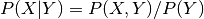

Nonparametric Methods nonparametric¶
This section collects various methods in nonparametric statistics. This includes kernel density estimation for univariate and multivariate data, kernel regression and locally weighted scatterplot smoothing (lowess).
sandbox.nonparametric contains additional functions that are work in progress or don’t have unit tests yet. We are planning to include here nonparametric density estimators, especially based on kernel or orthogonal polynomials, smoothers, and tools for nonparametric models and methods in other parts of statsmodels.
Kernel density estimation¶
The kernel density estimation (KDE) functionality is split between univariate and multivariate estimation, which are implemented in quite different ways.
Univariate estimation (as provided by KDEUnivariate) uses FFT transforms, which makes it quite fast. Therefore it should be preferred for continuous, univariate data if speed is important. It supports using different kernels; bandwidth estimation is done only by a rule of thumb (Scott or Silverman).
Multivariate estimation (as provided by KDEMultivariate) uses product kernels. It supports least squares and maximum likelihood cross-validation for bandwidth estimation, as well as estimating mixed continuous, ordered and unordered data. The default kernels (Gaussian, Wang-Ryzin and Aitchison-Aitken) cannot be altered at the moment however. Direct estimation of the conditional density () is supported by KDEMultivariateConditional.
KDEMultivariate can do univariate estimation as well, but is up to two orders of magnitude slower than KDEUnivariate.
Kernel regression¶
Kernel regression (as provided by KernelReg) is based on the same product kernel approach as KDEMultivariate, and therefore has the same set of features (mixed data, cross-validated bandwidth estimation, kernels) as described above for KDEMultivariate. Censored regression is provided by KernelCensoredReg.
Note that code for semi-parametric partial linear models and single index models, based on KernelReg, can be found in the sandbox.
References¶
- B.W. Silverman, “Density Estimation for Statistics and Data Analysis”
- J.S. Racine, “Nonparametric Econometrics: A Primer,” Foundation and Trends in Econometrics, Vol. 3, No. 1, pp. 1-88, 2008.
- Q. Li and J.S. Racine, “Nonparametric econometrics: theory and practice”, Princeton University Press, 2006.
- Hastie, Tibshirani and Friedman, “The Elements of Statistical Learning: Data Mining, Inference, and Prediction”, Springer, 2009.
- Racine, J., Li, Q. “Nonparametric Estimation of Distributions with Categorical and Continuous Data.” Working Paper. (2000)
- Racine, J. Li, Q. “Kernel Estimation of Multivariate Conditional Distributions Annals of Economics and Finance 5, 211-235 (2004)
- Liu, R., Yang, L. “Kernel estimation of multivariate cumulative distribution function.” Journal of Nonparametric Statistics (2008)
- Li, R., Ju, G. “Nonparametric Estimation of Multivariate CDF with Categorical and Continuous Data.” Working Paper
- Li, Q., Racine, J. “Cross-validated local linear nonparametric regression” Statistica Sinica 14(2004), pp. 485-512
- Racine, J.: “Consistent Significance Testing for Nonparametric Regression” Journal of Business & Economics Statistics
- Racine, J., Hart, J., Li, Q., “Testing the Significance of Categorical Predictor Variables in Nonparametric Regression Models”, 2006, Econometric Reviews 25, 523-544
Module Reference¶
The public functions and classes are
smoothers_lowess.lowess(endog, exog[, frac, ...]) |
LOWESS (Locally Weighted Scatterplot Smoothing) |
kde.KDEUnivariate(endog) |
Univariate Kernel Density Estimator. |
kernel_density.KDEMultivariate(data, var_type) |
Multivariate kernel density estimator. |
kernel_density.KDEMultivariateConditional(...) |
Conditional multivariate kernel density estimator. |
kernel_regression.KernelReg(endog, exog, ...) |
Nonparametric kernel regression class. |
kernel_regression.KernelCensoredReg(endog, ...) |
Nonparametric censored regression. |
helper functions for kernel bandwidths
bandwidths.bw_scott(x[, kernel]) |
Scott’s Rule of Thumb |
bandwidths.bw_silverman(x[, kernel]) |
Silverman’s Rule of Thumb |
bandwidths.select_bandwidth(x, bw, kernel) |
Selects bandwidth for a selection rule bw |
There are some examples for nonlinear functions in
statsmodels.nonparametric.dgp_examples
The sandbox.nonparametric contains additional insufficiently tested classes for testing functional form and for semi-linear and single index models.